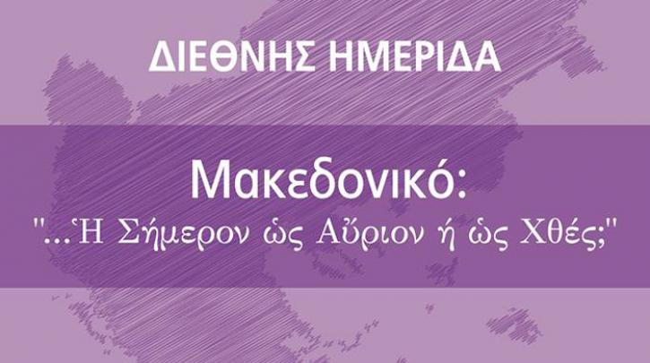

Με τη συμμετοχή ιστορικών και πανεπιστημιακών από την Ελλάδα, την Βουλγαρία και την ΠΓΔΜ πραγματοποιήθηκε στο δημαρχείο της Θεσσαλονίκης η διεθνή ημερίδα του Ινστιτούτου Νίκος Πουλαντζάς με τίτλο «Μακεδονικό: ‘...η σήμερον ως αύριον ή ως χθές;’».
Την άποψη ότι το Μακεδονικό αποτέλεσε κατά κύριο λόγο ζήτημα εσωτερικής πολιτικής στην Ελλάδα και μάλιστα όχι πρόσφατα αλλά τα τελευταία 150 χρόνια, προσπάθησε να τεκμηριώσει με την εισήγησή του ο δημοσιογράφος της Εφημερίδας των Συντακτών και ιστορικός Τάσος Κωστόπουλος. Αναφέρθηκε αρχικά στην πληθυσμιακή σύνθεση της περιοχής της Μακεδονίας τα τελευταία χρόνια της οθωμανικής περιόδου για να καταδείξει ότι το ελληνικό στοιχείο μειοψηφούσε σε σύγκριση με το εβραϊκό, το τουρκικό αλλά και το σλαβόφωνο. Στη συνέχεια παρέθεσε σειρά στοιχείων που καταδεικνύουν τη συστηματική προσπάθεια που καταβλήθηκε από το ελληνικό κράτος, μέσα από οργανώσεις, φορείς και δίκτυα, για τον «εξελληνισμό» των κατοίκων της Μακεδονίας. Η επίδειξη εθνικοφροσύνης, όπως χαρακτηριστικά επισήμανε ο κ. Κωστόπουλος, αποτελούσε απαραίτητη προϋπόθεση για την αναγνώριση δικαιωμάτων. Αντίστοιχα δίκτυα και «φορείς εθνικοφροσύνης» εκμεταλλεύονται σήμερα το μακεδονικό ζήτημα με στόχο τη χειραγώγηση των μαζών προς όφελός τους, στη νομή θέσεων εξουσίας.
«Η Θεσσαλονίκη δεν μπορεί να είναι ο σκαντζόχοιρος του εθνικισμού» είπε με την έναρξη της ομιλίας του ο βουλευτής του ΣΥΡΙΖΑ Τριαντάφυλλος Μηταφίδης, ο οποίος χαρακτήρισε ψέμα τις «αλυτρωτικές βλέψεις» των γειτόνων, επισημαίνοντας ότι θεωρεί λανθασμένη τη χρήση του όρου «αλυτρωτισμός» ακόμη και από την πλευρά της Αριστεράς στην Ελλάδα. Μίλησε επίσης για υποκριτική στάση της αξιωματικής αντιπολίτευσης και εξέφρασε την αισιόδοξη άποψη ότι βρισκόμαστε σε καλό δρόμο για την επίλυση του ζητήματος.
Αντίθετα απαισιόδοξος δήλωσε ο ιστορικός από τη Βουλγαρία Tchavdar Marinov, παρουσιάζοντας στην εισήγησή του τη στάση του βουλγαρικού εθνικισμού, που όπως εξήγησε έχει αντισερβικά χαρακτηριστικά. Η εναντίωση στη Σερβία ερμηνεύει, όπως παρουσίασε, την μέχρι σήμερα στάση της Σόφιας. Η Βουλγαρία ήταν η πρώτη χώρα που αναγνώρισε την ανεξαρτησία της ΠΓΔΜ, με την προσδοκία ότι θα μειώνονταν η σερβική επιρροή και ότι οι κάτοικοί της θα αναγνώριζαν την βουλγαρική καταγωγή τους. Αυτό όμως δεν συνέβη, με συνέπεια τη μεταστροφή της στάσης της Σόφιας, μετά το 2012, οπότε μαζί με την Αθήνα άρχισε να προβάλει εμπόδια στην προοπτική ένταξης της ΠΓΔΜ στην ΕΕ. Το προηγούμενο έτος άρχισε μια νέα προσπάθεια επαναπροσέγγισης των δύο πλευρών, για τον οποία ωστόσο ο κ. Marinov δήλωσε απαισιόδοξος.

«Αντί να ξεχάσουμε το Μακεδονικό σε δέκα χρόνια, το θυμόμαστε κάθε δέκα χρόνια» είπε αρχίζοντας την ομιλίας της η κοινωνιολόγος Αθηνά Σκουλαρίκη, η οποία παρουσίασε τα «κομβικά σημεία μεταστροφής» της ελληνικής πολιτικής επί του θέματος. Όπως εξήγησε η ελληνική πλευρά εστιάζει με ευκολία στην περίοδο της αρχαιότητας, παραβλέποντας την περίοδο του 19ου και 20ου αιώνα, κατά την οποία γεννήθηκαν τα έθνη κράτη της περιοχής. Μέχρι το 1992, είπε, η ελληνική πλευρά αποδέχονταν χωρίς ενδοιασμούς ότι η Μακεδονία εκτίνεται και πέραν των ελληνικών συνόρων. Αυτό άλλαξε το 1992 με τα τότε συλλαλητήρια, τα οποία ωστόσο δεν μπορούν να συγκριθούν με τα αντίστοιχα σημερινά, καθώς ήταν κεντρικά σχεδιασμένα και είχαν τη στήριξη του υπουργείου Εξωτερικών. Το 1995 η επίσημη θέση της Ελλάδας άλλαξε και πάλι με την αποδοχή της σύνθετης ονομασίας, που θα περιλαμβάνει τον όρο Μακεδονία, ενώ το κόμμα της αξιωματικής αντιπολίτευσης προχώρησε φέτος σε νέα μεταστροφή, απομακρυνόμενο από αυτή τη θέση. Αξιοσημείωτο κατά την κα Σκουλαρίκη είναι το γεγονός ότι οι δημοσκοπήσεις καταγράφουν αντίστοιχες διακυμάνσεις και στην άποψη της κοινής γνώμης για το ονοματολογικό.
Τους τρόπους με τους οποίους η λαογραφία χρησιμοποιήθηκε ως εργαλείο προπαγάνδας για την σύνθεση των εθνικών μύθων παρουσίασε στην εισήγησή της η εθνολόγος και λαογράφος Μιράντα Τερζοπούλου.
«Για 11 χρόνια είχαμε στην ΠΓΔΜ μια εθνικολαϊκιστική κυβέρνηση που δημιούργησε το τέρας της εθνοκρατίας. Είναι μια τεχνική που ακολουθείται στα Βαλκάνια από όλες τις κυβερνώσες ελίτ με σκοπό να μην κάνουν τους πολίτες πολιτικά υποκείμενα, αλλά υποκείμενα εθνικισμού». Την άποψη αυτή υποστήριξε ο πολιτικός ανθρωπολόγος από το πανεπιστήμιο της ΠΓΔΜ Goran Janev εξηγώντας ότι μέρος αυτής της τεχνικής ήταν και η κατασκευή γιγαντιαίων αγαλμάτων του Μεγάλου Αλεξάνδρου κλπ, στα Σκόπια. Σύμφωνα με τον Janev με την απομάκρυνση του Γκρούεφσκι από την εξουσία και την ανάληψη των καθηκόντων της κυβέρνησης Ζάεφ διαμορφώθηκε καταρχήν μια διάθεση ώστε οι πολίτες της Μακεδονίας να αισθάνονται ισότιμα ανεξάρτητα από την εθνότητα τους. Αυτό το στοιχείο, όπως είπε, συμβάλει περαιτέρω σε μία διαφορετική προσέγγιση των ζητημάτων που αφορούν τις σχέσεις με τις γειτονικές χώρες, δηλαδή την Ελλάδα και τη Βουλγαρία.
Στην εκδήλωση είχε προσκληθεί αλλά δεν κατόρθωσε να παραστεί ο δήμαρχος Θεσσαλονίκης Γιάννης Μπουτάρης. Μεταφέροντας τον χαιρετισμό του δημάρχου, ο συνεργάτης του και αντιδήμαρχος Θεσσαλονίκης Νίκος Φωτίου, είπε μεταξύ άλλων ότι η σύντομη επίλυση του θέματος της ονομασίας της γειτονικής χώρας είναι και προς το συμφέρον της Ελλάδας. «Ήδη πολλές χώρες αναγνωρίζουν τη γειτονική χώρα με το όνομα “Μακεδονία” και κανείς δεν μπορεί να αποκλείσει ότι στο μέλλον δεν θα κάνουν το ίδιο και διεθνείς οργανισμοί», είπε ο κ. Φωτίου.